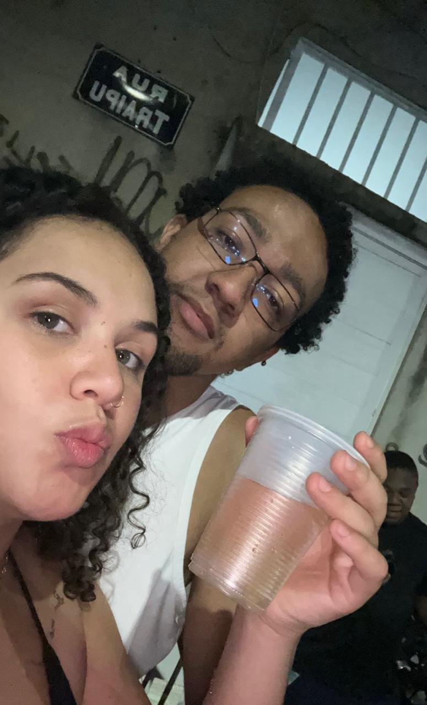
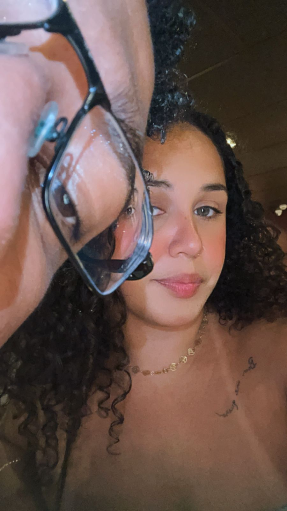
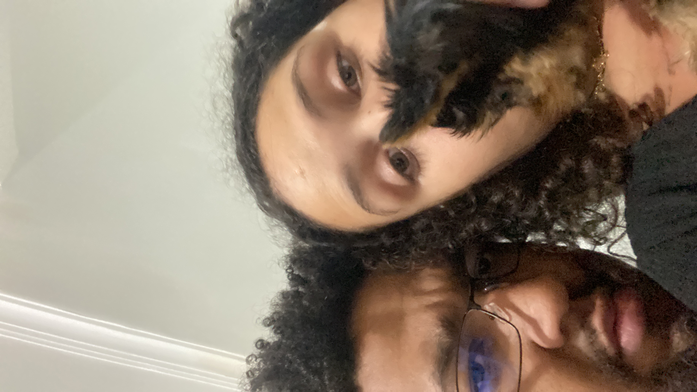
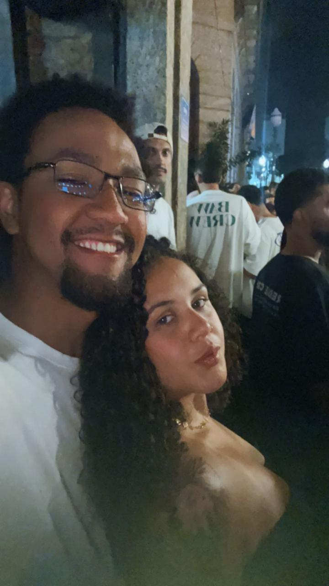
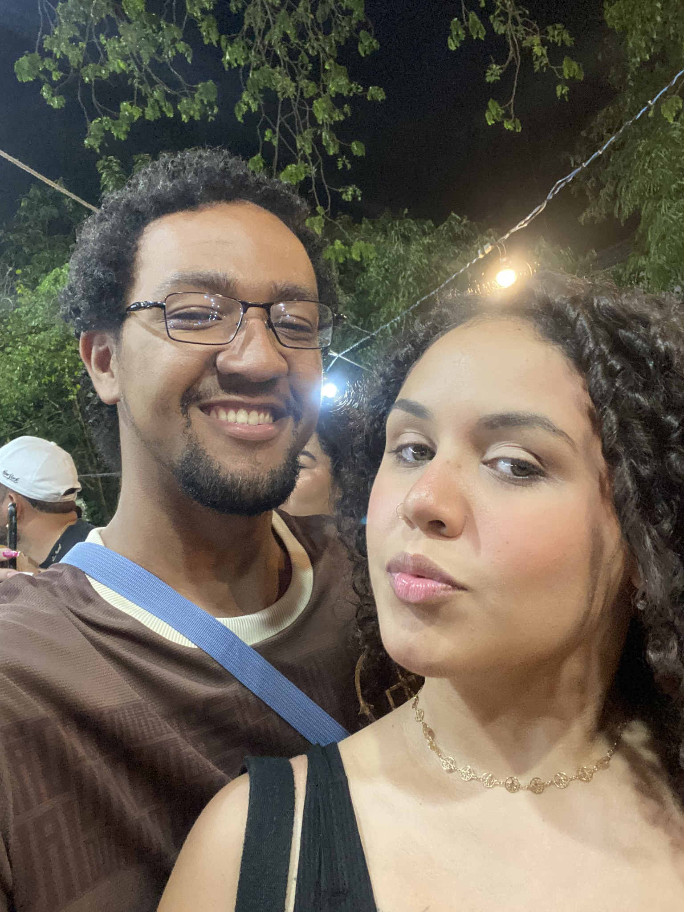
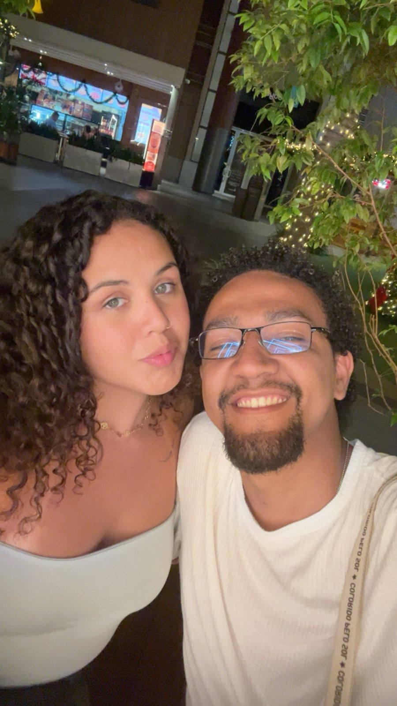

para você
Talvez esta seja apenas mais uma página para você.
Mas para mim, ela guarda um pedaço da nossa história.
uma carta
Não fiz esta página para tentar mudar sua decisão em alguns minutos.
Também não espero que algumas palavras façam desaparecer tudo aquilo que nos afastou.
Só senti que algumas histórias merecem um lugar onde possam existir com carinho.
Independentemente do caminho que a vida nos leve, queria agradecer por tudo o que vivemos.
nossa história



o que aprendi
Com o tempo percebi que amar não é apenas sentir.
Também é ouvir.
Também é compreender.
Também é cuidar.
Reconheço que falhei em momentos importantes.
Hoje enxergo coisas que antes não conseguia ver.
Não escrevo isso esperando apagar o passado.
Escrevo porque seria injusto fingir que não aprendi.
um álbum antigo



Algumas pessoas mudam nossa vida.
Mesmo quando deixam de caminhar ao nosso lado.
algumas palavras que eu precisava deixar
Não fiz esta página para tentar mudar sua decisão em alguns minutos.
Também não espero que algumas palavras sejam suficientes para apagar tudo o que nos afastou.
Só senti que nossa história merecia um lugar onde pudesse existir com carinho.
Queria guardar um pouco do que vivemos da forma mais bonita que eu consegui.
Se esta página conseguiu arrancar um sorriso, despertar uma lembrança ou simplesmente fazer você parar por alguns minutos, então ela já cumpriu o propósito para o qual foi criada.
Obrigado por dedicar alguns minutos ao nosso pequeno pedaço de história.
Algumas pessoas deixam marcas que o tempo não apaga.
E algumas histórias continuam bonitas, simplesmente porque aconteceram.
Com carinho,
Kayky.